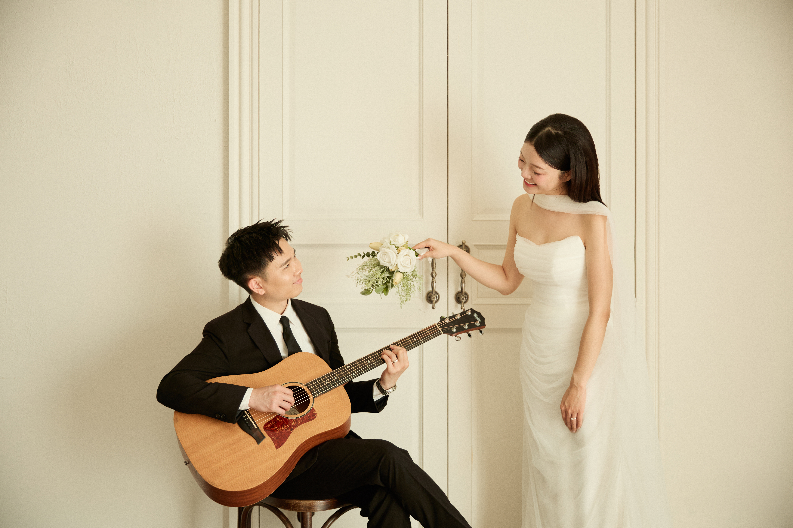
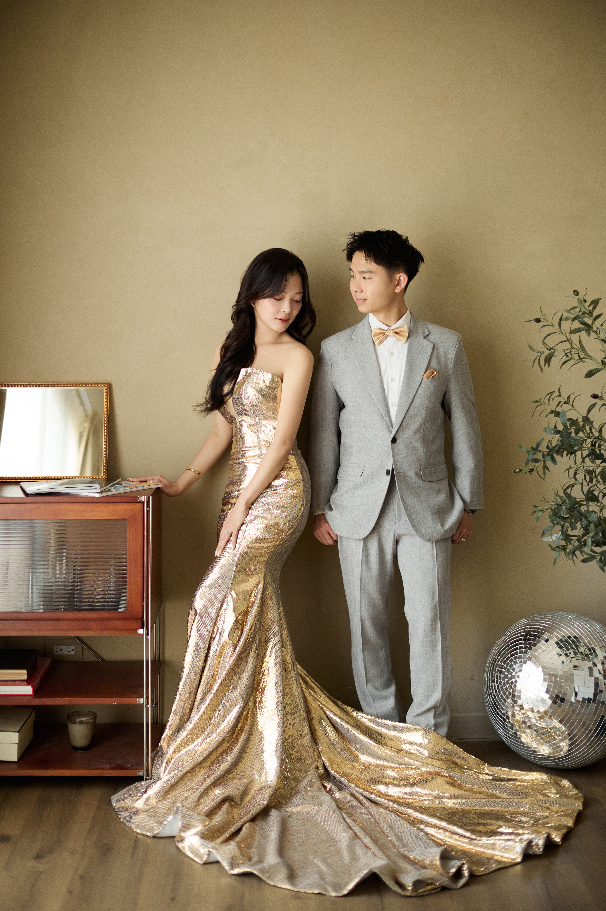
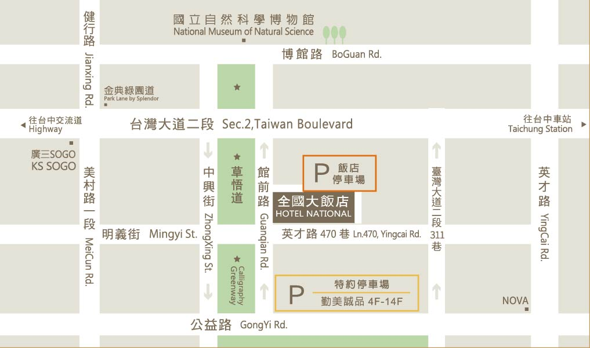

婚紗照搶先看
想看更多別忘了當天翻翻相冊喔！





感謝生命中的每一個巧合與陪伴讓各自獨立的我們找到了彼此最完美的歸屬 未來的日子，我們決定攜手同行經營屬於我們的平凡與幸福 在這個特別的日子裡，誠摯邀請您 與我們一同見證這份美好的承諾
林銘都 杜思毅
林義勝 蕭清涓
台中全國飯店 | 2F草悟廳
入席AM 11 : 40
開席AM 12 : 00

感謝您的耐心等候，列車將於以下時間出發
請換上您最帥氣美麗的服裝，以及一顆快樂的心前往搭乘